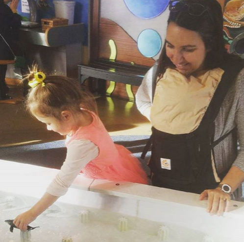
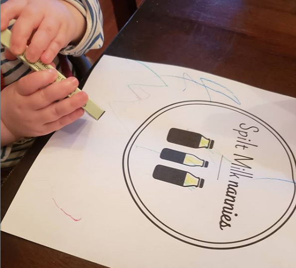
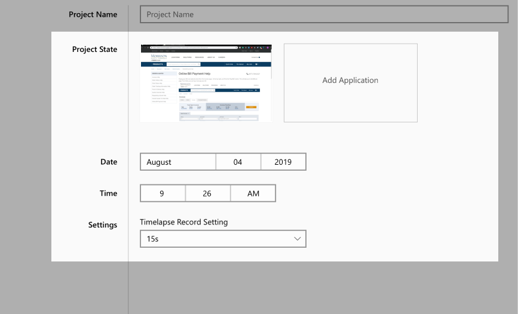

Hey, I'm Javan!
I'm a product designer with a background in HCI and engineering. My focus is in delivering story-rich, evidence-driven, and pragmatic design responses.
I recently finished my Masters degree from the MHCID program at the University of Washington, and am actively looking for employment opportunities. Email me at javan.z.wang@gmail.com for a portfolio presentation!


Iteration of game systems using feedback gathered from playtesting.
I worked closely with engineers, product, and design to implement features and gather playtest data for the Alpha launch of a mobile RPG - CloudBreakers.

My contribution
I ideated, designed, and prototyped major in-game systems such as Dossier, Crafting, Social, and the Mission briefing pages using Sketch and Photoshop. I co-facilitated the alpha playtest consisting of 40 players with my supervisor Brian.
Duration
4 months
Role
Usability study
UX design
Prototyping
Supervisor
Brian Lin
The Situation
I began my work term at Uken Games' CloudBreakers team at the beginning of 2016. This coincided with the Q1 Alpha release. Up until this point all feedback had been internal. The team decided to elicit external feedback from end users and other game developers to validate the decisions made.
A typical Friday at Uken.
Design objectives
- Creating a product that provides the player with a pleasant and intuitive experience.
- Designing with accordance to budget and timeline constraints.
- Designing systems that are compatible with past builds and in accordance with game design specifications, while keeping scalability in mind.
- Designing the product with the end user’s satisfaction and needs as the primary motivation.
Options explored
During the ideation process, I worked with my mentor and the game designer to flesh out the specifications and requirements of the system. The Dossier is used to showcase player progression by tracking their achievements and unlockables in the game.
 After decision on a general direction and understanding what the player expectations are, explorations on the different ways of executing on the requirements took place using low to mid fidelity mocks. These mocks are drafted up quickly using placeholder images and grayscale colours to prioritize speed over form.
After decision on a general direction and understanding what the player expectations are, explorations on the different ways of executing on the requirements took place using low to mid fidelity mocks. These mocks are drafted up quickly using placeholder images and grayscale colours to prioritize speed over form.
 Ultimately a decision was made to eliminate all but one of the candidates from the low fidelity mocks. The column based representation of the achievements proved to satisfy our design needs the best. The rationale for this is because it is unlikely that there would be more than 5 achievement categories for the players to track. By displaying all of the achievement progresses in a horizontal fashion, the player is presented with all of the key information they need. It was deemed unnecessary to have an "detailed view" for each achievement category since the information presented in the details panel is repetitive.
Ultimately a decision was made to eliminate all but one of the candidates from the low fidelity mocks. The column based representation of the achievements proved to satisfy our design needs the best. The rationale for this is because it is unlikely that there would be more than 5 achievement categories for the players to track. By displaying all of the achievement progresses in a horizontal fashion, the player is presented with all of the key information they need. It was deemed unnecessary to have an "detailed view" for each achievement category since the information presented in the details panel is repetitive.
Whiteboard ideation
From pen and paper to Sketch.
TL: Overworld Nameplate. TR: Dossier Overview Interface. BL: Player Profile Arena Information. BR: Crafting Interface.
User testing
Luckily my work term coincided with the Alpha playtest of CloudBreakers. The UX team had concerns in some of the general game design and gameplay directions. But in order to make our arguments more concrete we required validation in the form of external user feedback.
The UX team suggested that a closed beta would provide valuable user feedback for the studio. The playtest was designed in the form of a Longitudinal Diary user studies, and over 40 users participated in the playtest.
TypeForm.com was used to produce the playtest diary questions, and we enlisted help from UserTesting.com for feedback in the form user-emotion and user-behaviour videos (along with gesture recordings). We also got the chance to speak with some users in person for more in-depth qualitative feedback.
The UX team suggested that a closed beta would provide valuable user feedback for the studio. The playtest was designed in the form of a Longitudinal Diary user studies, and over 40 users participated in the playtest.
TypeForm.com was used to produce the playtest diary questions, and we enlisted help from UserTesting.com for feedback in the form user-emotion and user-behaviour videos (along with gesture recordings). We also got the chance to speak with some users in person for more in-depth qualitative feedback.
Typeform.com was used to gather quantitative feedback
Playtest results and findings
In total, 171 entries were recorded, and 40 players filled out at least one diary entry with detailed comments and feedback surrounding how they felt about the game emotionally. The average player session was around 25 minutes in length.
Two portions of the analysis was performed, a quantitative analysis where the users are asked to select from a list of terms that corresponded to their emotional state, and a more complex analysis that was based on qualitative commentary from free-form questions.
Two portions of the analysis was performed, a quantitative analysis where the users are asked to select from a list of terms that corresponded to their emotional state, and a more complex analysis that was based on qualitative commentary from free-form questions.

We broke down the data so we could correlate commonalities between the participants before presenting the findings to the entire team.
Quantitative findings
58
Fun
60
Satisfying
41
Frustrating
67
Buggy
65
Confusing
25
Intuitive
From these tables it could be seen that there is an approximate balance between players who reported the game as being confusing, fun, buggy, and satisfying. It is possible that the amount of bugs and glitches player encountered definitely could have negatively affected the player experience.
The initial observations made here indicate that there are a sizeable number of players which found parts of the game to be enjoyable, fun, and interesting. However, since “Confusing” and “Intuitive” indicate opposite reactions when used to describe player experiences, a conclusion could be drawn that the interface and interactions players are faced is more confusing than it is intuitive in its current state.
In addition, it can be noted that “Frustrating” occurred much more frequently than should be desired. This is indicative that the current design of the game is problematic as certain aspect of the game does cause frustration to the users.
The initial observations made here indicate that there are a sizeable number of players which found parts of the game to be enjoyable, fun, and interesting. However, since “Confusing” and “Intuitive” indicate opposite reactions when used to describe player experiences, a conclusion could be drawn that the interface and interactions players are faced is more confusing than it is intuitive in its current state.
In addition, it can be noted that “Frustrating” occurred much more frequently than should be desired. This is indicative that the current design of the game is problematic as certain aspect of the game does cause frustration to the users.
Qualitative findings
All of the feedback was placed into one of three major buckets — Core Systems, Supporting Systems, and Others. We grouped the similar comments together to generate the following insights.
Core system findings:
6
Boring/repetitive (PvE)
6
Lack of skill (PvE)
6
Lack of challenge (Battles)
Players wished to make more meaningful decisions more often. A number of players indicated that they were able to complete entire quests chains and mission areas without looking at the screen at all. The lack of meaningful decision-making coupled with the severe lack of challenge results in players feeling bored with the gameplay.
Supporting system findings:
4
Enhancing/evolve does not feel impactful
3
Unlocking additional formation slots is satisfying
3
Lack of understanding around quest completion workflow
There were numerous comments about players not understanding the motivation for their actions in the game — evolving and enhancing, destroying tap targets, purpose of the quest and mission rewards. It has been noted that there is a thematic disconnect between interacting with tap targets and the Battle engagements.
However on the positive side, a large number of players did express feelings of satisfaction with the increase in progression and power that comes along with making use of the crafting and enhancing system.
Other findings:
However on the positive side, a large number of players did express feelings of satisfaction with the increase in progression and power that comes along with making use of the crafting and enhancing system.
5
Dialogue ineffective for conveyance
5
Desire to add more ships earlier
4
Tutorial is ineffective
The players find that the current tutorial and instructions systems placed in the game is insufficient for relaying the game mechanics. The current tutorial being completely focused on the Battles sets the precedent for the player to expect an overall PvE experience akin to Battles.
The overall player progression felt slow and the game felt too easy. Connecting this to the concept of Flow, players are more skillful than we initially anticipated, and are not being sufficiently challenged.

The overall player progression felt slow and the game felt too easy. Connecting this to the concept of Flow, players are more skillful than we initially anticipated, and are not being sufficiently challenged.
Players are bored because they are not being sufficiently challenged.
Key findings
After discussing and evaluating all of the responses, for both the frequency of the issue, as well as how the responses were articulated, three common themes were discovered:
- Players derived immense satisfaction in seeing contribution to their own success
- All forms of progression should feel immediately impactful and communicated to the player clearly
- Desire to better understand the game’s core mechanics and supporting systems
Users want to feel like they are earning their rewards and victories; the players find the rise in challenge to be satisfying.
There's a lack of feedback in terms of player progression. This lack of clear feedback reduces the player incentive to actually progress within the game.
The game itself is classified as mid-core. As a result, there are a large number of intersecting systems within the game. However, not every system is sufficiently explained, which gives rise to player confusion and frustration.
Recommendations
On the PvE side, implementing or reworking the current PvE workflow to make the tap-targets feel more interactive or more engaging will lead to greater player satisfaction. Players should be given more agency to make meaningful decisions. On the battle side, the battles could be more challenging; players wish to be clearly rewarded for making strategically-viable decisions.
Player progression and game difficulty could be increased at a faster rate. This will allow players to spend more time in the more interesting areas of the game. Being rewarded with spending time wisely also ties into the first point mentioned in the conclusions of making meaningful decisions both inside the core system as well as the supporting systems.
The onboarding system needs to be revised. As it stands the system fails to sufficiently instruct players on the game systems.
The large amount of bugs definitely contributed to the overall level of frustration players felt. The engineering team could focus on eliminating major bugs before implementing new features.
Player progression and game difficulty could be increased at a faster rate. This will allow players to spend more time in the more interesting areas of the game. Being rewarded with spending time wisely also ties into the first point mentioned in the conclusions of making meaningful decisions both inside the core system as well as the supporting systems.
The onboarding system needs to be revised. As it stands the system fails to sufficiently instruct players on the game systems.
The large amount of bugs definitely contributed to the overall level of frustration players felt. The engineering team could focus on eliminating major bugs before implementing new features.
What we changed
Based on the research findings we made a number of changes. These changes were made to provide players with more agency, transparency, and information to make smart decisions.
We focused on providing more information to players upfront such that they can have an easier time understanding how the different game mechanics interact.
 We also updated the onboarding system such that instructions are provided explicitly through tutorial battles instead of being delivered through character dialogue.
We also updated the onboarding system such that instructions are provided explicitly through tutorial battles instead of being delivered through character dialogue.
We focused on providing more information to players upfront such that they can have an easier time understanding how the different game mechanics interact.
More information is provided on the garage crafting screen.
Instructions are much more explicit, and feedback is provided immediately.
Outcome & update
CloudBreakers was rebranded to CloudBreakers: Sky Tactics in 2016, and published to the Google Play store in Southeast Asia as a soft launch.
Unfortunately the product did not meet the company KPIs during the soft launch. The game was ultimately taken off the Google Play store, and the project was discontinued in early 2017.
In this instance, usability testing proved an accurate predictor of product success. In organizations I'll be working with in the future, I'll continue to advocate for the benefits of product prototyping and usability studies. If you have an Android system and would like to check out CloudBreakers for yourself, a number of three-party channels still host the APK. They could be found at the link below.
Unfortunately the product did not meet the company KPIs during the soft launch. The game was ultimately taken off the Google Play store, and the project was discontinued in early 2017.
In this instance, usability testing proved an accurate predictor of product success. In organizations I'll be working with in the future, I'll continue to advocate for the benefits of product prototyping and usability studies. If you have an Android system and would like to check out CloudBreakers for yourself, a number of three-party channels still host the APK. They could be found at the link below.
Tools used
- Vector graphics are edited using Adobe Illustrator
- High fidelity mocks done using Adobe Photoshop
- Low fidelity mocks done using Sketch
- Animations done in Adobe AfterEffects
- Prototyping done using Flinto
- Hand-off process performed in Zeplin
Hacking STEM
Science education kit for elementary school classrooms.
Role
Project management
Usability study
Prototyping
Product design
Teammates
Oliver Engel
Sakshat Goyal
Duration
10 weeks
Client
Microsoft Education
Advisors
Adi Azulay
Michael P. Smith
Jon Froehlich

Oliver, Me, Sakshat after winning the Best Technical Implementation award at the Microsoft Education showcase.
This page is still a work in progress.
In the meantime, you can learn more about the project from my teammate Oliver's portfolio. You can find me at javan.z.wang@gmail.com!
This page is still a work in progress.
Come back later for new updates!
A Windows OS feature that improves personal productivity.
Chiron is a personalizable virtual workspace that allows users to build their work environment, keep the context, and switch between projects.
Created in partnership with

Role
Product design
Usability study
System architecture
Project management
Prototyping
Content strategy
Teammates
Mengxiao Song
Sakshat Goyal
Khai Nguyen
Duration
19 weeks
Client
Intel Corp.
Advisors
Mike Premi
Michael P. Smith
Amanda Menking
Key Features
Build
Everyone uses different techniques to organize their digital workspace. Automatically organize and customize the workspace to what works best for you with Chiron’s smart activity containers and plugins.Keep
Mental contexts are hard to track and replicate. With Chiron you can create time-stamped memos, save versions of digital workspace, and view last opened applications to help you keep the context.Switch
It’s easy to be distracted during transitions. Chiron uses activity containers and the timeline to keep activities and versions organized, so you can quickly switch between activities or view previous changes.
It fits really well to my life. I should get emails done in the morning and then the bigger project during the day. I'm trying to make that transition, it'll really help me organize projects I'm working on.
My contribution
I took on the role of a design manager for this project. I was responsible for generating the roadmap, determining the strategic aims of the end product, delegating tasks, hosting sprint planning and review meetings, and managing OKRs for each teammate.In addition, I took ownership of synthesizing the insights from the prototyping phases, creation of the system architecture, as well as conducting research on the technical feasibilities of the features.
For this particular project I had an interest in ensuring the features are aligned specifically to our goals of context management, and gather evidence to pitch the design proposal as a compelling and complete story.

Opportunity
The modern workforce is shifting towards more people choosing full time self employment. There will be 42 million self-employed workers in America alone by 2020. Multitasking is an essential part of modern work life, and especially for self-employed individuals. However, multitasking is unavoidable and costly for productivity.25 mins
Average time spent on resuming tasks after derailing.
50%
more likely for errors to occur when people multitask.
40%
overall decrease in productivity during multitasking.
Statistics taken from https://www.apa.org/research/action/multitask.
Design research
Initially we set out to investigate ways of improving personal productivity, more specifically — how users defined productivity, what contributes to a focused state, and what distracts people. We consulted four workplace productivity experts, and conducted ethnographic research with 16 participants to gain more knowledge on this domain, and understand specific user frustrations.
Ricardo Hidalgo
A licensed mental health counselor and clinical psychiastrist specialized in mental, emotional, and psychological problems related to workplace stress.

Kate Thompson
Private life coach focused on helping individuals, groups, and organizations with managing their lifestlye and schedule to be more productive.

Mary Czerwinski
Computer scientist and workplace producitivity research manager at Microsoft.
Shamsi Iqbal
Principle researcher at Microsoft, specialized in Attention Management for Multitasking Domains
User persona - Erin's story
During one of the the ethnographic interviews, we met one participant who would later become the champion of our product. We had the opportunity to speak with Erin from Spilt Milk Nannies. We used her traits to define our ideal user persona.


What we learned from research
- The opportunity cost of blocking distractions is high
- High degree of multitasking and context switching
- Productivity is highly personal
- Existing tools are not tailored for multitasking
Many people have commitments which require them to always be available, and thus can’t just simply block out all the communications channel. This ties back to the point about multitasking we discussed at the beginning of the presentation.
We also learned that self-employed people like Erin, especially freelancers, have a tendency to multitask and switch context often. They do so because they are on their own most of the time, which requires them to manage multiple different types of work.
We also learned that productivity is very personal, and this is seemingly true for everyone, not just self-employed people. We found this out when we asked people what is a productive day for them, and the answers are all over the places.
Most productivity tools on the market are not tailored for unpredictable work patterns that require frequent context switching. Even fewer try to address the issue of multitasking.

Discussing initial research insights with Mary Czerwinski at the Microsoft campus in Redmond.
Transition to design

Roadmap for the remaining 9 weeks of the design phase.
Competitive analysis
We looked at existing productivity and context management softwares to analysize existing solutions that tries to address this problem. The list includes Microsoft Focus Assist, Cold Turkey, FocusMe, Hocus Focus, Mindful Browsing, OmniFocus, and others. What we learned is that most of these products tries to address productivity and multitasking by blocking out distractions or preventing users from context switching.One standout was the Virtual Desktop functionality on Windows 10. But what we realized was that Virtual Desktop is not often used by users because it is very time consuming to create and sort applications into the different desktops. We saw an opportunity to introduce AI as a way of automating this process. Specifically Virtual Desktop does context switching very well, but context building is time consuming, and they don't tackle context keeping at all.

Windows 10 Virtual Desktop
Defining the strategy
At this point we needed to generate ideas that fulfills the following roles — they need to address the problem of multitasking for our target audience of self-employed individuals. The product needs to be distinct from similar competitors. The design needs to be aligned with the use case of our user persona Erin. Based on the competitive analysis, we determined that the product needs to be able to build context quickly, keep the context, and also switch between these user-built contexts.Build
Automatically build the work environment and allow for customization.
Keep
Keep the context to retain the maximum amount of information during detachment.
Switch
Speed up the transition and reattachment process to minimize distractions.
At this point we wanted to determine which direction to take the project. We confirmed during research that everyone defines productivity differently. Which means everyone has different tools and techniques for organizing their work.
Strategy
Context management at the OS level. Design will be the container for personalized tools.
VS
Tactics
Context management at the tools level. Design will be focused on the tools themselves.
After a round of competitive analysis we also learned that most of the existing tools try to address this at a tactical level, such as Calendar for managing your schedule, and Trello and Asana for tracking and managing tasks. So what we decided was to focus on the strategy level. We want to create a strategic platform for people to apply their personal task management tactics.

We decided to exclude features focused on tracking due to privacy concerns, and focus on creating a context-management framework at the OS level.
Low fidelity prototype
What we tested
Our objective for this prototype was to validate both the design concept, as well as the core features. So we created a video for participants to validate our design concept. The video follows the day in the life of a typical Chiron user - Ricardo, a freelance architect. I defined the specific story within the prototype, and advocated for the core features. Mengxiao and Sakshat created the prototype using Figma, and I produced the video using AfterEffects.What we learned
We definitely had some issues with the framing and storytelling in the video. The good news is we did receive validation for the overarching concept. However the value of the core features were brought into question.
I like how it only opens what you need. Because normally when you switch between [projects] you can’t really close all windows. It feels a bit like decision paralysis.

Rework "summary"
Our participants universally agreed that they would like to see “summary” but no two people externally or internally could agree on what type of information would be useful to be shown. So we reworked summaries to show the most recently opened applications instead.Discuss collaboration
There was overwhelming support for the implementation of collaboration functionality. However no two participants could agree on what they deemed as the “core feature” of collaboration.Further personalization
At the conclusion of the prototyping sessions, we have a running list of 10 smaller feature requests. Participants wanted a way to use their current set of tools within the context of Chiron. So we considered a way to introduce further personalization.Usability testing
What we did
After receiving the feedback, we made a number of changes to include into the mid-fidelity prototype. The objective for this phase was to flesh out the interaction design and test the specific execution of the features.We made a number of changes to the prototype in this iteration. We included a plugin marketplace to provide further personalization to the platform. We reworked the summary page and changed it to "last opened applications". We also updated the visual design using Microsoft's Fluent design system. Since Chiron is being branded as a Windows feature, it made sense for us to leverage the existing design patterns of Windows.
We interviewed four participants in total to perform four main tasks. The prototype used for Usability Testing was created by Mengxiao in Principle. The prototype consisted of a "main application" in which you could view the timeline and project archive, and a "quick view" mode where you could create and switch between different activity containers.
What we learned
We started them off on the overlay screen and asked them to navigate to the timeline and view a different version of their project. Our participant Whitney literally interacted with everything on the page except “Open Chiron”. And she said,
What is ‘Open Chiron’? I thought I’m already in Chiron?
Also, we received feedback that the functionalities of these two parts were overlapped, but the visual inconsistency made them look like a light theme and a dark theme for a same thing. Because of this, we merged the overlay and the main application together in our high fidelity prototype. After that, these two parts became the main page view, and the activity archive view using the same visual language.
Our participants really couldn’t agree on whether the timeline should go left to right or right to left, and we received nearly 50/50 split on the “right” direction of the timeline. So instead we decided to orient the timeline from top to bottom instead, with top being the most recent.
Our participants really couldn’t agree on whether the timeline should go left to right or right to left, and we received nearly 50/50 split on the “right” direction of the timeline. So instead we decided to orient the timeline from top to bottom instead, with top being the most recent.

Why is the timeline going from left to right?
Whitney compared Chiron to Virtual Desktop and noticed the similarities. We asked her what she thought about the current project creation flow, and she said,

I know what virtual desktop is, but I just don’t use it because it just takes too much time to actually organize the windows.
As a next step, we want to make the project creation process “smarter”, and introduce a way to automate the project creation and categorization process. In the final prototype, we have a suggestions section in the side bar that automatically generates groupings for these active applications.
High fidelity prototype
In the high fidelity prototype, we incorporated the learnings from the two previous rounds of testing, and consolidated the features to address the three design objectives of context building, context keeping, and context switching. Since the terminology is repetitive, we renamed them as "environment building", "context keeping", and "activity switching".We revisited Erin's story, and the final prototype is done from the point of view of Erin, who needs to balance her managerial work with personal obligations. Erin is planning her wedding and honeymoon, in addition to tracking the status of her employees and clients.
The final prototype was created using Adobe AfterEffects by Khai Nguyen, with Sakshat and Mengxiao responsible for the assets used in the video. I was responsible for the content, script, and the technical documentation.
Final deliverables
Next steps
The final deliverables were passed off to Mike Premi from Intel's Artificial Intelligence Innovation Lab for future development. Mary Czerwinsky and Shamsi from Microsoft Research showed interest in the findings we uncovered, and we are in the process of passing off the findings to Microsoft as well.The following are some highly requested features that we didn't have time to implement into the V1 since they did not directly align with one of our three design pillars of Build, Keep, or Switch.
Voice control
Voice controlled system was a highly requested feature. We envision users speaking to Chiron as if it was the personal assistant. This way people could spend less time manually entering commands. It would also allow you to task switch while multitasking at your home office or shared workspace.Share & export
All of our users wanted a way to share and export the files and contexts created using Chiron, or include a way to collaborate with other teammates, take over a project, or take turns working where one person can see what the other person did with an activity archive and the ability to return to previous versions when necessary.
Multimedia memos
Our users really liked the memos feature. So much that they want to add more than just text and voice as memos. So we are exploring ways to support adding files, images, videos as memos.Tools Used
- Figma for design
- Keynote for slide deck
- AfterEffects for video production
- Product animation done using Keynote

Hey! I’m Javan!
I previously worked with Microsoft Education, Microsoft HoloLens, and Intel's AI Innovation.
I am a product designer who has been practicing UX since early 2014. My focus is in helping teams create evidence-driven design responses through storytelling. I firmly believe the best works are born as the collective contribution of groups. Currently I hold a Master's degree in HCI and Design, and a B. of Applied Sciences (B. of Engineering).
Previously worked on a design research team with Microsoft Hololens, and design prototype team from Intel. During my undergrad, I completed design internship placements at Noom Inc, Uken Games, and INTERSECT.
Let's chat!
Previously worked on a design research team with Microsoft Hololens, and design prototype team from Intel. During my undergrad, I completed design internship placements at Noom Inc, Uken Games, and INTERSECT.
Let's chat!
Skills
User experience design
Design ethnographic research
Usability testing
Frontend development
Interaction design
Rapid prototyping
Tools
Sketch
Figma
Photoshop
AfterEffects
Premiere
InVision / Marvel / Flinto
Interests
Vector illustrations
Homecooking
Tabletop RPGs
Video games